现有机密虚拟机设计方案汇总
本文算是一个笔记性质的文章，整理了现有的大部分机密虚拟机（CVM）的设计方法，并主要围绕硬件/固件扩展、内存机密性保护、内存完整性保护、寄存器状态保护几个方面来介绍。覆盖了市面上的大多数 CVM 设计，既包括工业界已商用的方案，如 AMD SEV、Intel TDX 等，也包括一些学术界的方案，如 VirTEE、ZION。
由于 Arm 官方方案 CCA 的标准和软件栈趋近成熟，因此基于 Arm 架构的其它方案如 TwinVisor 和 virtCCA 在此便不再介绍了，以下是个人整理的现有 CVM 方案的列表：
- AMD SEV-SNP: 现已商用。
- Intel TDX: 现已商用。
- Arm:
- TwinVisor (SOSP ‘21): None
- virtCCA (arXiv): None
- CCA (官方方案): 硬件规范成熟，软件栈快速构建中，支持的芯片（Arm v9）还未上市。
- IBM PEF: 现已商用，发表论文（EuroSys ‘21）。
- RISC-V:
- CoVE: 社区官方方案，正在建设中
- VirtTEE (DAC ‘22):
- 向下兼容，虚拟机内核无需经过修改。
- 原生支持安全热迁移和安全 I/O。
- ZION (DAC ‘25): 无需任何硬件扩展，可在现有的 RISC-V 处理器上实现。
x86
AMD SEV
硬件/固件扩展
硬件扩展为内存控制器中的加密引擎、扩展 MMU、MSR、安全协处理器 PSP 等，PSP 中运行的固件充当软件 TCB 的角色，该固件只开放了 API 接口，具体实现并未开源。
内存机密性保护
将物理地址的最高位作为加密位（C-bit），使用 C-bit 为 1 的物理地址进行访存时，数据在进出（写入/读取）DRAM 时会被内存控制器上的 AES 引擎自动进行加密和解密。由于虚拟机内存数据在运行时也出于加密状态，因此能够有效抵御冷启动攻击。
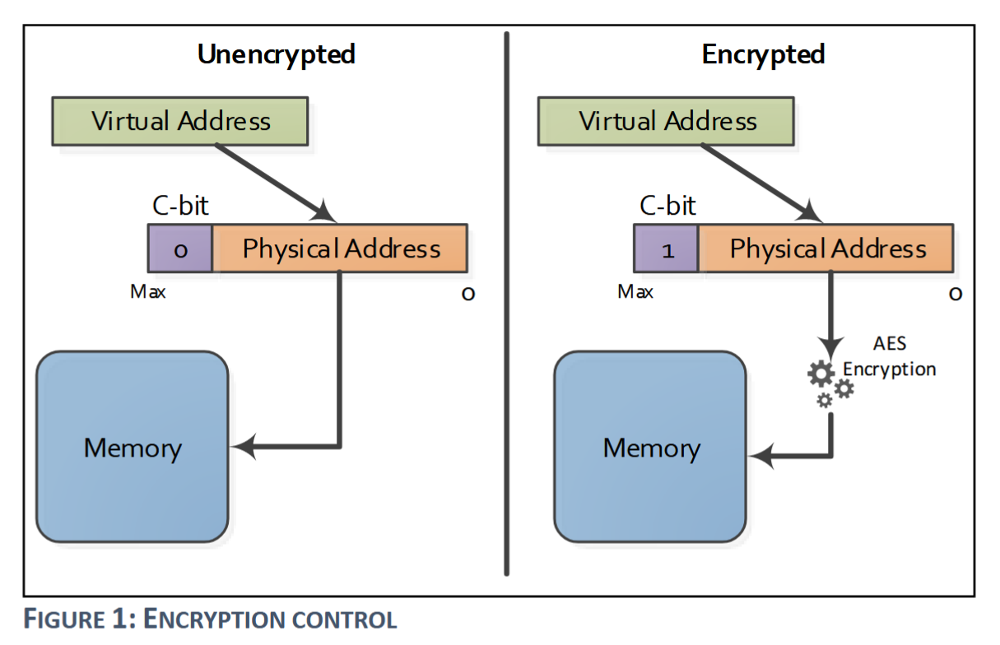
内存完整性保护
引入 RMP 表数据结构，并使用特定 MSR——RMP_BASE（0xc0010132） 和 RMP_END（0xc0010133）标记一块内存区域，用于存储 RMP 表的条目，该内存区域只能被 PSP 进行写入。
RMP 表条目中包含 assigned、gpa、asid、validated 等字段，用于标识一个宿主机物理页面（PFN）是否已分配给了虚拟机，以及分配给了虚拟机的哪个物理页面（GFN）。在完成地址转换得到 HPA 并访存前进行 RMP 检查，判断本次访存是否合法。
由于硬件内存加密机制已经提供了机密性的保障，因此针对内存读访问的情况，将不会进行 RMP 检查。
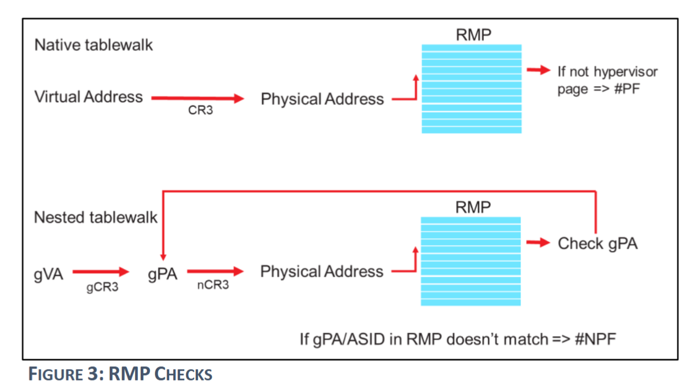
寄存器状态保护
SVM 的 vcpu 数据结构 VMCB 被划分为两部分：控制字段和数据字段（以下称为 VMSA）。其中控制字段不加密，完全由 Hypervisor 所掌控，而 VMSA 需要加密以确保机密性，同时还需要引入完整性保护以防止 Hypervisor 对其进行破坏。
关于完整性保护部分，根据 SEV-ES 白皮书中的描述，基于 intergrity-check 来实现，应该就是计算 VMSA 的哈希值并存储在一段无法被软件访问的 DRAM 区域，在恢复虚拟机执行时检查哈希值是否匹配以确保寄存器状态没有被恶意篡改。而 SEV-SNP 由于引入了内存完整性保护，因此可以借助 RMP 表为 VMSA 提供完整性保护。
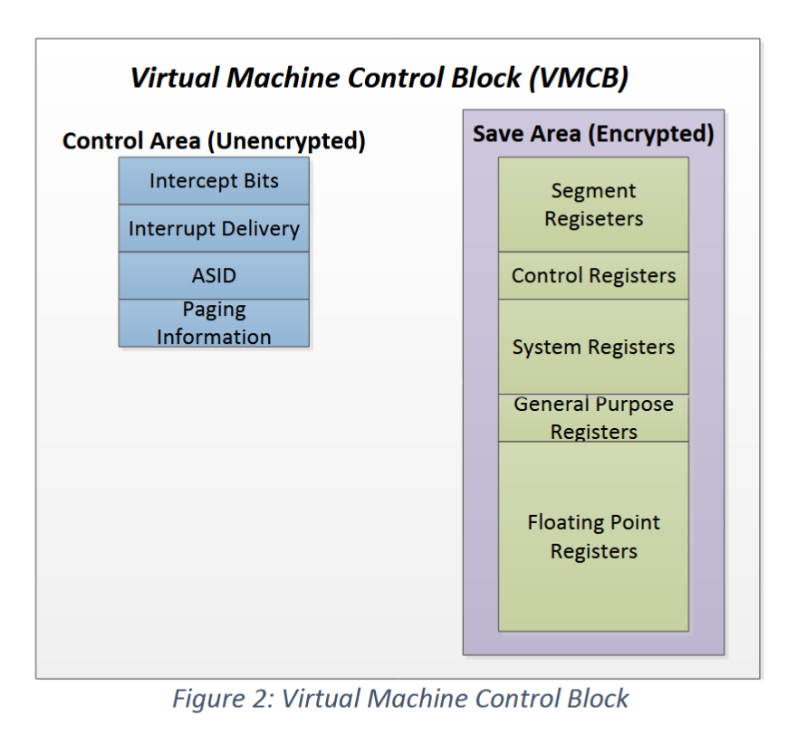
安全增强
SEV-SNP 在机密虚拟机内存继续进行特权级划分（基于内存的访问权限），与原本的 CPL 形成正交的关系。在不引入安全增强（Security Enforcement）的情况下，虚拟机内核直接运行在 VMPL0（VMPL 的最高特权级）；而引入了 Security Enforcement 的情况下，VMPL0 运行着一个全新的特权软件（官方实现为 SVSM），用于接管许多原来需要在虚拟机内核中做的工作，如 #VC 异常的处理、PVALIDATE 指令的执行等。
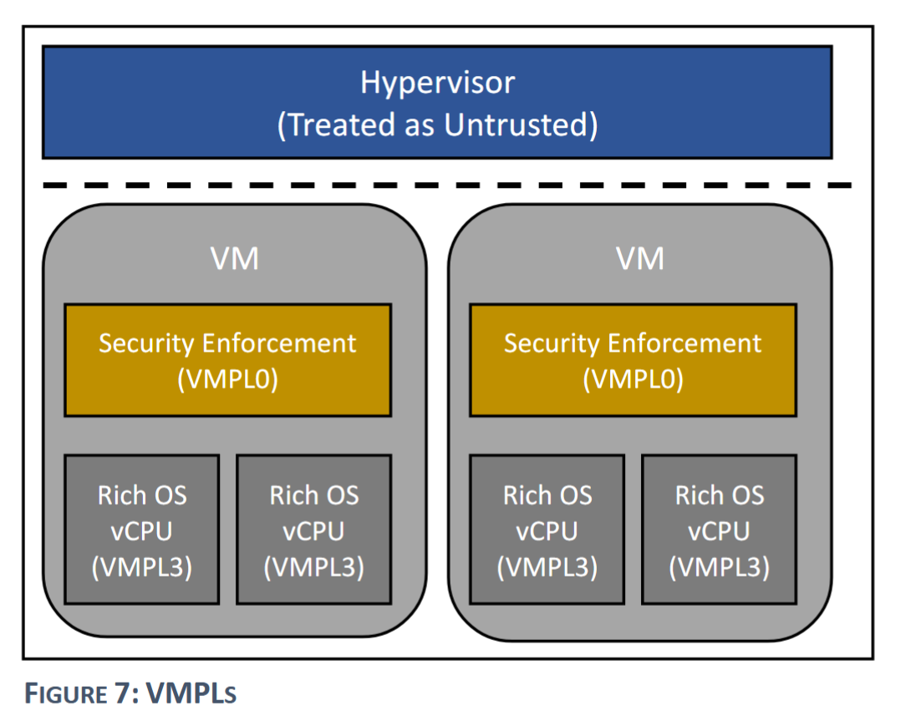
参考文献
- David Kaplan, Jeremy Powell, and Tom Woller. 2016. AMD memory encryption. White paper (2016).
- David Kaplan. 2017. Protecting VM register state with SEVES. White paper (2017).
- AMD. 2020. AMD SEV-SNP: Strengthening VM Isolation with Integrity Protection and More. White paper (2020).
Intel TDX
硬件/固件扩展
Intel TDX 的硬件扩展主要包括一些 MSR、内存加密引擎，固件包括 TDX 模块、用于验证和加载 TDX 模块的 SEAMLDR。
TDX 的基本架构如下图所示。TDX 模块是核心组件，由 SEAMRR 寄存器标识其内存范围并提供保护，作为不可信的 VMM 与 TD（可信执行单元，本文简单认为是机密虚拟机）之间的间接层，向 VMM 提供 SEAMCALL 接口，包括创建、删除、调度 TD 等。此外，它还接管了非机密虚拟机环境下 VMM 的部分职责，即虚拟机的进入和退出。在 TDX 中，TD 在发生异常或中断时并不会直接退出到 VMM 中，而是退出到 TDX 模块中。同时，TDX 模块也向 TD 提供了类似非机密虚拟机环境下的 Hypercall 接口——TDCALL，运行虚拟机向“VMM”发起请求。
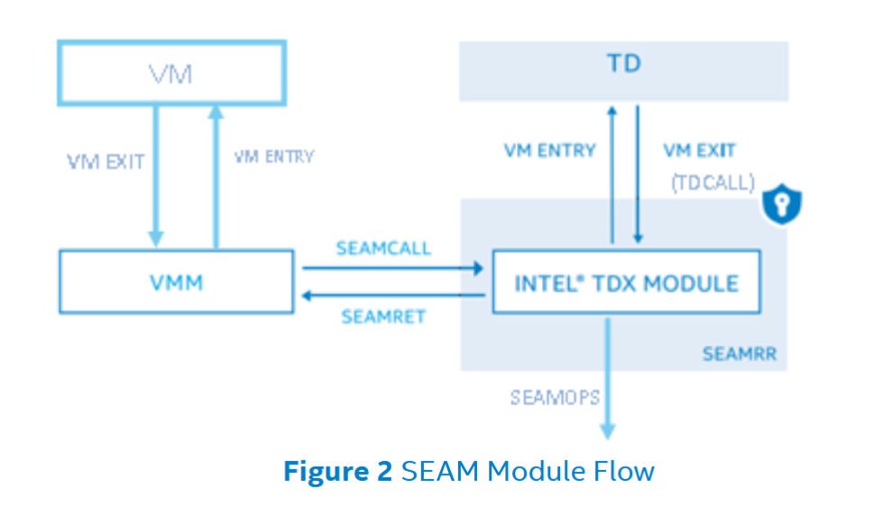
内存机密性保护
Intel TDX 基于 MKTME 内存加密实现内存的机密性，与 SEV 内存加密不同的是，TD 的 GPA 中的最高位不是加密位（C-bit）而是共享位（Shared bit），该位为 1 时代表页面是与 VMM 等其它不可信实体共享的页面。
加密密钥由密钥 ID（以下称作 KeyID）来决定，KeyID 被分为两类：私有 KeyID 和共享 KeyID。其中私有 KeyID 由 TDX 模块管理，在 TD 创建时为每个 TD 分配一个独一无二的私有 KeyID，用于对内存进行加解密；而共享 KeyID 则由 VMM 来管理，可以被其用作对自身内存或是 TD 的共享内存进行加密。
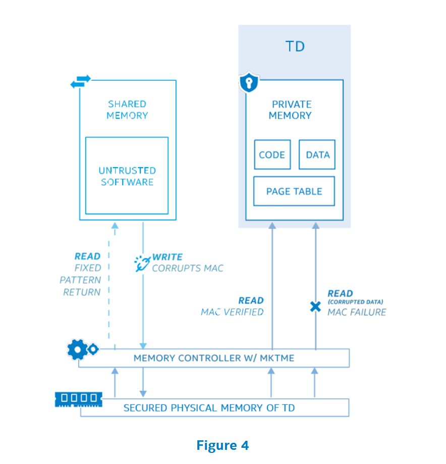
内存完整性保护
Intel TDX 的 KeyID 不光用作加密用途，还能够实现强大的完整性保障。TDX 的完整性保障分为两类：加密完整性保护（cryptographic-integrity protection）和逻辑完整性保护（logical-integrity protection），前者为 TDX 的默认保护方式，能同时防止特权软件的恶意写入和 rowhammer 等基于物理硬件特性的攻击方式，后者则只能防止特权软件的恶意写入。
对于逻辑完整性保护而言，它只是在 Cache 行中引入一个 1bit 的 TD 标记位（TD-ownership bit），用以标记该行是否属于 TD 的私有内存，该位通过访存时使用的 KeyID 是否为私有 KeyID 来自动填充到 Cache 中。非 TD 区域的实体如 VMM 尝试对该内存区域进行写入（或读取）时，由于此时 CPU 并不处于 SEAM 模式下，因此访存失败，返回一个固定的填充模式，防止 VMM 进行密文分析。
而在加密完整性保护的模式下，还在 TD 标记位的基础上，增加了基于密码学的完整性保护方式。具体来说，内存控制器的加密引擎将缓存行粒度的数据计算基于 SHA3 的 MAC（28 位）值，MAC 计算使用的密钥同样是加密密钥。有了这样 MAC 值的存在，当外部实体对内存的数据进行破坏后，当再次从内存中读取该段数据时，将会再次计算 MAC，此时将会发现不匹配的情况，从而检测出内存完整性问题。这样基于 MAC 的完整性保护，能够抵御 VMM 绕过 Cache，直接使用 rowhammer 等方式直接篡改内存中的数据的攻击方式。
Intel TDX 的内存完整性保护方案和 AMD SEV-SNP 有很大的区别，前者是在访存的数据写入阶段（写入 Cache）进行防护，而后者则是在地址转换结束以及数据写入之前进行防护。
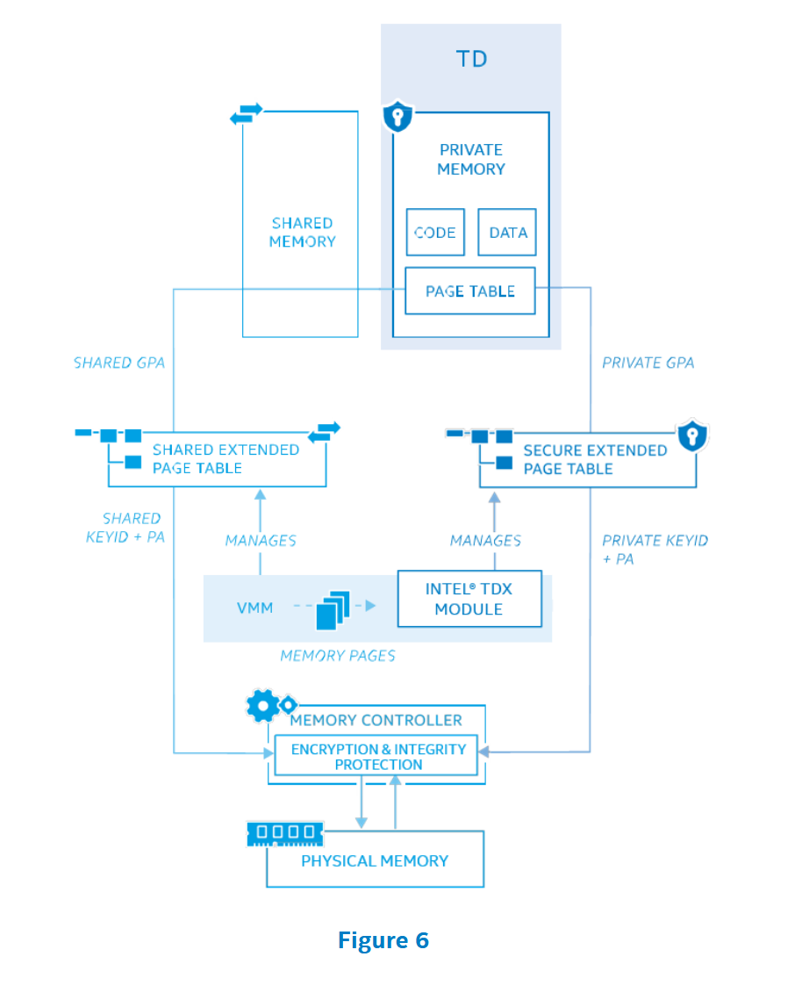
除此之外，Intel TDX 还引入了“双二阶页表”的设计，对于一个 TD 而言，包含一个 Secure EPT 和 Shared EPT，其中 Secure EPT 用于存储 private GPA 到 HPA 的映射；Shared EPT 用于存储 shared GPA 到 HPA 的映射。
Shared EPT 就相当于非机密虚拟机下的 EPT，由 VMM 直接管理；而 Secure EPT 则由 TDX 模块来管理，存储在 SEAM 的私有内存中，无法被 VMM 直接读写。此外，TDX 模块通过向 VMM 提供有限的接口，如向 Secure EPT 中添加或删除条目，TDX 模块会保证这些 VMM 发起的 Secure EPT 修改操作不会破坏安全性保证。
寄存器状态保护
当 TD 创建的时候，TDX 模块会请求 VMM 提供一个 VMCS 页面作为 TD 的初始寄存器状态。该页面将作为 TD 的寄存器 VMCS 结构而存在，就像非机密虚拟机一样负责虚拟机和宿主机寄存器状态的保留和恢复。同时为其施加内存的机密性和完整性保护，使得其无法被 VMM 所访问。此后 TD 退出时，将会推出到 TDX 模块中而不是直接回到 VMM，因此防止了 TD 寄存器状态的泄露。
参考文献
- I. Corporation, “Intel Trust Domain Extensions (intel TDX) whitepaper,” 2024, accessed: 2024-11-20. [Online], Available: https://www.intel.com/content/dam/develop/extemal/us/en/ documents/tdx-whitepaper-final9- 17.pdf
Arm
CCA
硬件/固件扩展
Arm CCA 的硬件扩展主要包括寄存器的一位（SCR_EL3.NSE）用于标识是否位于 Realm 世界中，内存控制器中的加密引擎用于实现硬件内存加密，扩展 MMU 用于实现 GPT 表的检查。固件方面主要包括全新的运行在 Realm 中的 EL2 固件——RMM，以及对原本的 EL3 Monitor 进行扩展，并分别向 RMM 和 Host 提供 RSI 和 RMI 接口。
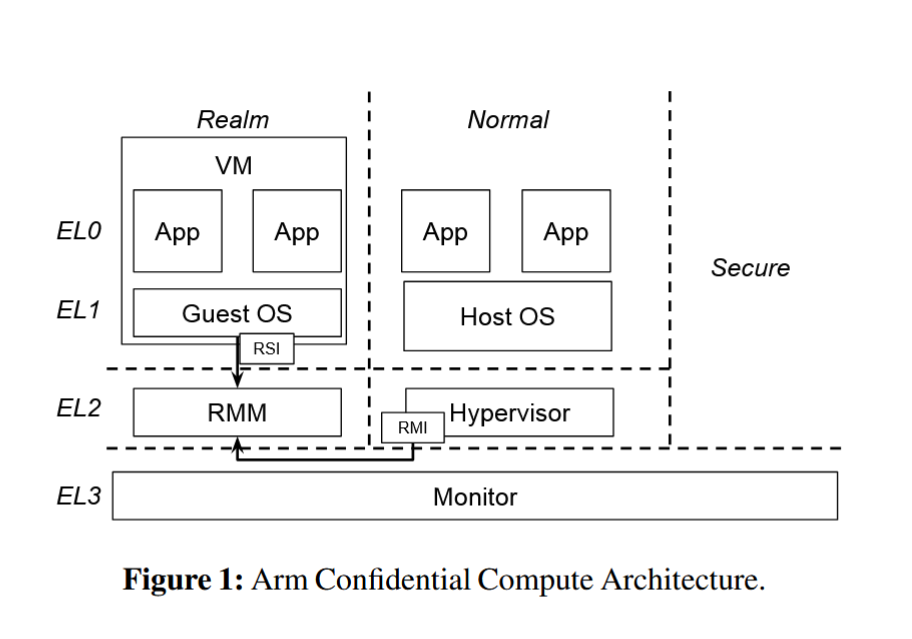
内存机密性和完整性保护
PAS
在介绍 CCA 如何提供内存隔离机制前，需要解释一下 PAS（Physical Address Space） 的概念。和实现进程与进程之间隔离的虚拟地址空间 AS 类似，PAS 定义了一系列彼此之间相互隔离的物理地址空间。当然这里的“隔离”也并非是 DRAM 芯片上的隔离，而同样是通过 CPU 寄存器状态、页表条目以及 MMU 等软硬件协同机制实现的。
在 CCA 中，根据 EL 特权级和 SCR_EL3 寄存器的状态，共划分出四个 PAS：Non-secure、Secure、Realm、Root，其访问控制规则如下表所示：
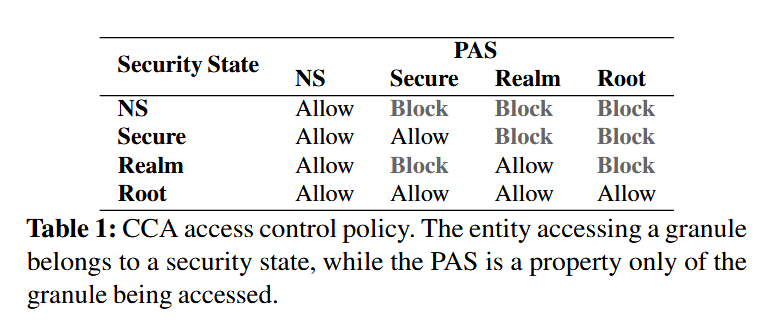
内存加密
Arm CCA 引入了类似 AMD SEV 的硬件内存加密功能，实现方式都是在内存控制器中引入加密引擎，在数据从 CPU 中写入到 DRAM 或从 DRAM 中读取到 CPU 时进行加解密，密钥选择上较 SEV 来说更为复杂，可以选择根据 PAS 来决定，即整个 Realm PAS 中的所有虚拟机共享一个密钥，也可以进行更为细致的配置，具体细节在此不过多展开。
内存隔离
内存隔离的实现主要基于两个方面来实现：一是强制执行 PAS 节中表格所示的访问控制规则；二是控制 host 无法直接篡改 Realm 的二阶页表（CCA 中称为 Realm Translation Tables, RTT）。
第一点基于 GPT（Granule Protection Table） 表数据结构来实现。GPT 表的条目以 Granule（也就是页面，CCA 中目前只支持 4KB 小页）为粒度，用于跟踪整个计算机系统中的每个 4KB 页面的 PAS 归属，由 EL3 Monitor 进行管理，不允许其它实体对其条目进行更新。
第二点基于 Realm 的二阶页表由 RMM 负责管理。Host 只能通过借助向 EL3 Monitor 发起 RMI 请求来对 Realm 二阶页表的间接操作，如创建、销毁等，正因为有了这个间接层，Host 才无法在可信组件不知情的情况下恶意对二阶页表进行篡改，从而扰乱 Realm 的执行。
基本的 RMI 接口如下图所示：
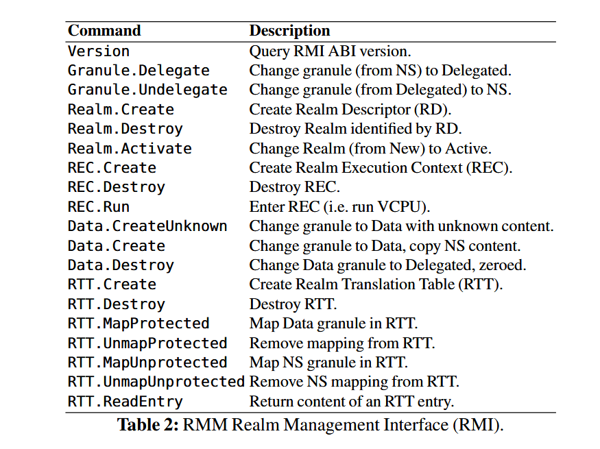
寄存器状态保护
寄存器状态的保护是基于内存隔离机制的，具体来说，Host 只能通过发起有限的几个 REC（Realm Execution Context，相当于虚拟机的 vCPU） 相关的 RMI 对 Realm 寄存器的状态进行控制，包括创建、销毁、运行。Realm 的 REC 具体内容保存在 RMM 中，为 Realm PAS 的部分，无法被 Host 所访问。每次 Realm 进入和退出时，借助 REC 进行保留和恢复，因此 Host 无法破坏执行中的 Realm 寄存器状态。
参考文献
- X. Li, X. Li, C. Dall, R. Gu, J. Nieh, Y. Sait, and G. Stockwell, “Design and verification o f the arm confidential compute architecture,” in 16th USENIX Symposium on Operating Systems Design and Implementation (OSDI 22), 2022, pp. 465-484.
- https://developer.arm.com/documentation/den0125/400
PowerPC
PEF
硬件/固件扩展
通过新的 MSR 位定义新的特权级 Secure Mode，并引入固件 Ultravisor 运行在该特权级下。同时，安全虚拟机 SVM 也运行在该模式下。
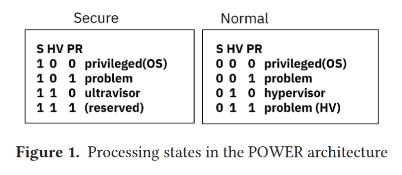
Ultravisor 作为最高特权级软件，向 Hypervisor 和虚拟机开放 Ultracall 接口，用以提供安全特性的支持，诸如对 SVM 的创建等操作。由于 Hypervisor 等实体都需要借助 Ultracall 才能管理安全设施，因此 Ultravisor 中便能通过引入一系列数据结构等进行记录，检测 Hypervisor 发起的 Ultracall 请求是否会破坏安全设施，如果可能， Ultravisor 将不会报告任何错误，但是也什么都不做。
这里 without performing the action and does not indicate an error 的选择值得思考。
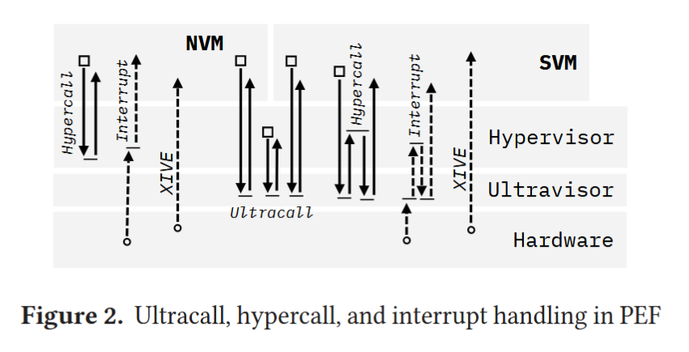
内存机密性和完整性保护
内存被划分为安全内存和非安全内存，使用地址的一位进行标识（a high order address bit, RA(15)，不确定是哪一位），标记为 1 的即为安全内存，只有位于 Secure Mode 下的程序才能访问安全内存。以此实现内存的机密性和完整性。
POWER9 架构上实现的方案暂不支持类似 AMD SEV 那样的硬件内存加密，因此无法抵御冷启动等物理内存攻击。硬件内存加密将会在 POWER10 架构中引入。因此在 Hypervisor 在尝试将 SVM 的安全内存转变为非安全内存前，Ultravisor 会负责将该内存进行加密，同时刷新相关 TLB 条目等，防止数据发生泄露。
寄存器状态保护
在安全模式下，所有的 hypercall 都会直接传递到 Ultravisor 中，异步中断（如时钟中断、设备中断）都会直接传递到 Ultravisor 或 SVM（应该是虚拟机自己能处理的） 中。因此在这种模式下，每次虚拟机退出时，都不会直接跳转到不安全的 Hypervisor 中导致寄存器状态发生泄漏。对于 hypercall 而言，在 Ultravisor 中会进行寄存器状态的保存，并清除掉除了必要的寄存器（如 hypercall 的参数）外的其它寄存器状态，在进入 Hypervisor 中进行处理，处理完成后先回到 Ultravisor 中将虚拟机寄存器状态恢复回来。
参考文献
- Guerney DH Hunt, Ramachandra Pai, Michael V Le, Hani Jamjoom, Sukadev Bhattiprolu, Rick Boivie, Laurent Dufour, Brad Frey, Mohit Kapur, Kenneth A Goldman, et al. 2021. Confidential computing for OpenPOWER. In Proceedings of the Sixteenth European Conference on Computer Systems. 294310.
RISC-V
CoVE
硬件/固件扩展
CoVE 的硬件扩展包括扩展 MMU 以支持 MMT 表查询，扩展 CSR 以支持机密状态位 Confidential-mode qualifier（以下简称 C-bit）。固件扩展包括在 HS 模式（与不可信 Host 同样的特权级）下引入 TSM，作为 TVM 的轻量级管理程序，同时对 M-mode 固件（如 OpenSBI）进行扩展，引入 TSM-driver，作为 Host 和 TSM 的高特权中间层，实现二者的隔离。
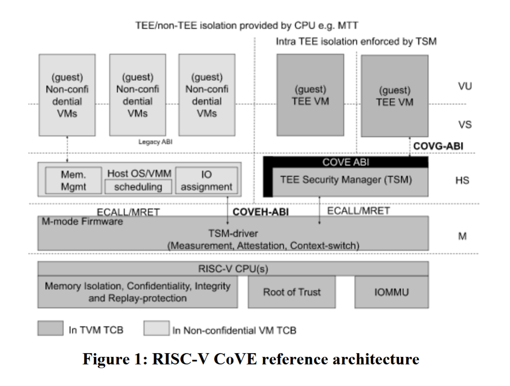
TSM 主要提供以下两类 ABI：
- 将 TSM-driver 作为中间层，向 Host 提供 COVH-ABI，用于管理 TVM 的声明周期，例如创建 TVM、向 TVM 添加内存页面和 vhart（相当于其它架构的 vCPU），调度 vhart 执行等。
- 向 TVM 提供 COVG-ABI，允许 TVM 请求认证报告，内存共享或解除共享等 VirtIO 相关功能。
具体来说，主要包括：
- 平台的 TSM 检测和能力枚举，包括版本、功能特性等。
- 允许 VMM “捐赠”内存给 TSM 进行管理。
- 创建 TVM，并为其分配机密内存。
- 将 TVM 的代码和数据初始化为机密内存，作为 TVM 初始化的一部分，同时对这些机密内存进行度量。
- TVM 初始化时其非机密内存部分将会被完全置零。
- 创建 TVM 的 vhart 数据结构，并负责在进出 TVM 前后对其进行保留和恢复。
- 完成 TVM 的创建，机密内存的度量值将可用于远程证明。
- 负责处理 TVM 的退出事件，包括 vhart 调度、中断注入、异常处理等。
- 映射 TVM 的 demand-zero（不太理解）机密内存区域，便于实现机密内存的 lazy allocation。
- 映射 TVM 的共享内存部分。
- 停止 TVM 的执行，以及回收 TVM 的内存资源。
内存机密性和完整性保护
TSM 作为 TVM 的“轻量级 Hypervisor”，同时负责对其机密和非机密内存进行分配和管理。但是 CoVE 实现对机密内存的保护并不是基于 RISC-V 的 PMP，而是采用了类似 AMD SEV-SNP 的方案，对硬件 MMU 进行扩展，并在完成地址转换并准备访存前对内存跟踪数据结构 MMT 表进行检查，确保本次访存合法，才能触发访存。
但是相较于 SEV-SNP 的 RMP 表，MTT 表的设计简单了很多。由于 TSM 端已经完成了机密/非机密内存的抽象，因此最少只需要引入一个 C-bit 标识是否是机密内存（为 1 则代表机密内存），并规定只有 CSR 状态中 C-bit 为 1 的 CPU 才能访问机密内存。同时，控制不可信实体（如 Host、普通 VM 等）运行在 C-bit 为 0 的状态下，可信的 TVM 等运行在 C-bit 为 1 的状态下。
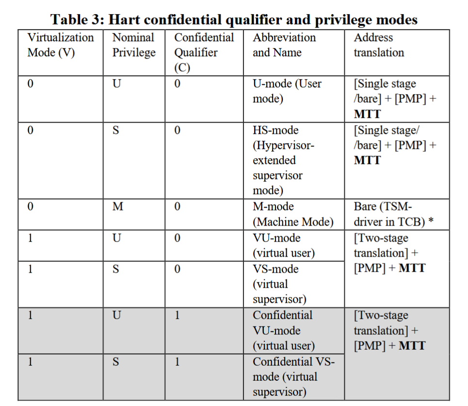
需要注意的是，这里 C-bit 的概念既包括某个 CSR 中的一位，用来标志 CPU 运行的状态，即是否运行在可信的可信的实体中；同时还用来指示一个物理页面是否属于机密内存。
下图是在引入了 MTT 表之后的访存流程：
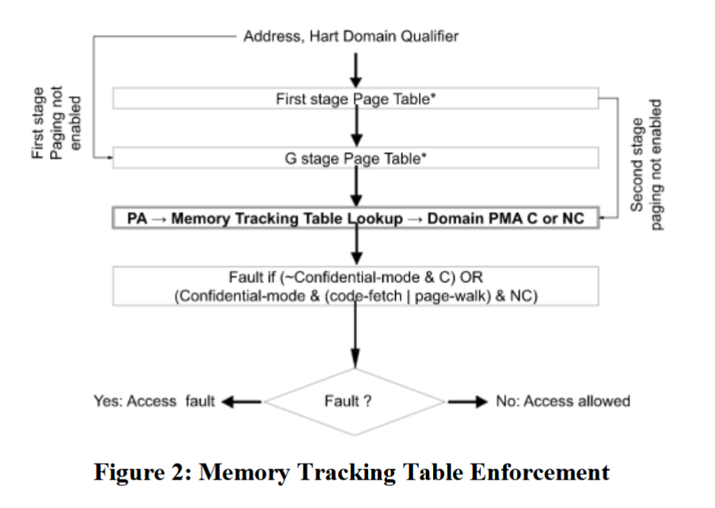
在论文中以及官方手册中也提到，针对 C-bit 为 1 的页面，可以考虑引入硬件内存加密和基于密码学的完整性保护（基于 MAC）等，可以有效防止冷启动等基于物理的攻击方式，不过这一特性是否采用及其具体实现依特定平台而定。
寄存器状态保护
由于 TSM 承担了处理 TVM 退出事件的任务，且机密内存与 Host 相隔离，自然实现了寄存器状态的保护。
参考文献
- R. Sahita, V. Shanbhogue, A. Bresticker, A. Khare, A. Patra, S. Ortiz, D. Reid, and R. Kanwal, “Cove: Towards confidential computing on riscV platforms,” in Proceedings o f the 20th ACM International Conference on Computing Frontiers, 2023, pp. 315-321.
- RISC-V AP-TEE Task Group, Version 0.3, 1/2024, Confidential VM Extension (CoVE) for Confidential Computing on RISC-V platforms.
VirTEE
硬件/固件扩展
首先在 M-mode 下对固件（如 OpenSBI）进行扩展，引入安全监视器 Security Monitor。同时从内存中划分出多个安全区域（和大多数 TEE 一样，称为 Enclave），实现方式是引入一些只能被安全监视器访问的寄存器，用于对 Enclave 的地址范围进行标识。此外，为了抵御缓存侧信道攻击，VirTEE 在系统总线层引入了一个过滤引擎，当一个 CPU 核心位于一个 Enclave 区域内执行时，它的缓存数据会借助过滤引擎，与其它 CPU 核心隔离开，不进行共享。而当 CPU 核心退出 Enclave 区域时，硬件会自动清除它的所有缓存信息，防止数据被其它核心窃取。
此外，还在每个 Enclave 中都引入一个 Enclave Monitor，运行在 HS 模式下（非 CVM 的 Hypervisor 运行模式），作为 CVM 的 Hypervisor，负责虚拟机二阶页表的管理和处理虚拟机的退出事件等，由于 Enclave Monitor 位于 TCB 中，因此虚拟机内核无需作任何修改，以此实现本文工作的创新点—— 完全向下兼容 。
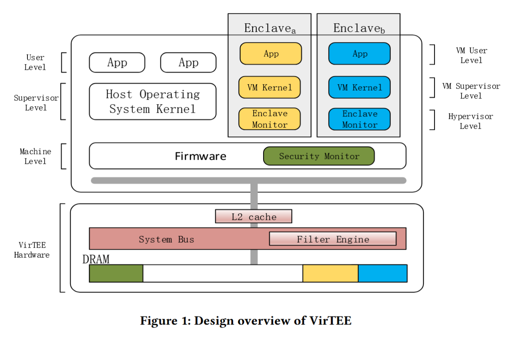
Enclave 创建流程
- 宿主机分配连续的物理内存，并按照一定的内存布局将 Enclave Monitor、虚拟机二进制和其它必要的元数据填充到其中。
- 宿主机通知 Security Monitor 创建的 Enclave 的内存起始地址和初始内存大小。Security Monitor 为这个 Enclave 分配一个唯一的 id 并将其与它的起始内存地址和大小绑定起来。
- 宿主机找到一个可用的 CPU 核心，并将该核心分配给这个 Enclave，并切换到这个核心，将 id 作为参数进行传递并触发 Security Monitor 的进入 Enclave 函数。
- Security Monitor 通过这个 id 找到对应的 Enclave，并通过设置对应的寄存器对这块内存区域进行标识。在此之后，Security Monitor 将会使用一个密钥对这块 Enclave 的签名进行验证。如果失败的话，Security Monitor 将会拒绝创建 Enclave，否则它将进行上下文切换并跳转到 Enclave Monitor 的入口执行。
- Enclave Monitor 接收从 Security Monitor 传递过来的三个参数：CPU 核心 id、包含所有设备信息的设备树、Enclave 内存的起始地址。
- Enclave Monitor 初始化必要的虚拟机环境：如二阶页表和虚拟设备。外设被分配并且绑定到虚拟机中。
- Enclave Monitor 跳转到虚拟机的入口点开始执行。
- Enclave 内的虚拟机就此运行在 Enclave Monitor 的控制之下。虚拟机因此可以通过 Enclave Monitor 提供的服务接口实现虚拟机热迁移和认证服务等。
内存机密性和完整性保护
内存机密性和完整性保护基于 Enclave 之间的隔离来实现，一条访存指令只有只有当该指令的地址和访存的目标地址位于同一个 Enclave 范围内时，访存才能成功。同样的，由于没有内存加密，无法抵御冷启动等物理攻击。
寄存器状态保护
由于 Enclave Monitor 担当了 Enclave 内虚拟机的 Hypervisor 的角色，因此虚拟机的寄存器状态信息保存在 Enclave Monitor 内存中，也就是 Enclave 范围内。因此借由 Enclave 的内存隔离机制，能够有限防止宿主机对虚拟机的寄存器状态进行窥探。
参考文献
- J. Wang, P. Mahmoody, F. Brasser, P. Jauemig, A.-R. Sadeghi, D. Yu, D. Pan, and Y. Zhang, “Virtee: A full backward-compatible tee with native live migration and secure i/o,” in Proceedings o f the 59th ACM/IEEE Design Automation Conference, 2022, pp. 241-246.
ZION
硬件/固件扩展
ZION 设计的创新点在于它无需任何的硬件扩展，可直接在现有的商用 RISC-V 处理器上工作。它的扩展主要是为 M-mode 下的固件（如 OpenSBI）引入安全模块 SM，负责 CVM 的安全资源和状态管理。和 VirTEE 类似，SM 也是作为 CVM 的 Hypervisor 而存在，只不过和 VirTEE 每个 CVM 配备一个专属的 Enclave Monitor 不同，ZION 采用的是一种集中式的管理方案，即 SM 作为所有的 CVM 的 “Hypervisor”，同时直接运行在 M-mode 下，无需再次经过上下文切换到其它的特权级，即文中强调的创新点之一：短路径 CVM 模式（Short-path CVM mode）。
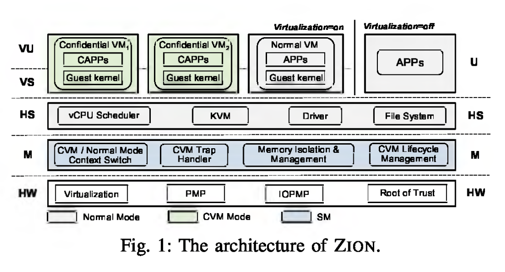
内存机密性和完整性保护
由于 ZION 主打的就是不用进行任何的硬件扩展，那内存隔离部分的实现自然是基于 RISC-V 的 PMP 机制，但是 PMP 所支持的隔离域的数量有限（通常为 16 个），因此文中采用了一种分层的内存管理机制。
具体来说，在初始化时，SM 先通过配置 PMP 寄存器，从普通内存中划分出一段安全内存作为安全内存池。在每次 CPU 在进入 CVM-mode 前（即切换到 CVM 上下文开始执行前），SM 都对相关的 pmpcfg 寄存器进行配置，使得 CVM 能够访问安全内存。不同的 CVM 共用一个安全内存池中的内存，那么这就需要考虑到不同 CVM 之间内存隔离的问题。因为 SM 充当了 Hypervisor 的角色，自然也要处理 CVM 的二阶缺页异常，在处理二阶缺页异常的过程中 SM 就会确保同一个物理页面不会被分配给多个 CVM，以此实现 CVM 之间的隔离。其实这个过程和不可信 Hypervisor 管理普通 VM 二阶页表的过程是十分类似的。
一个大的安全内存池分配给多个 CVM，同时还涉及的动态扩容的问题，文中采用的策略如下图所示：
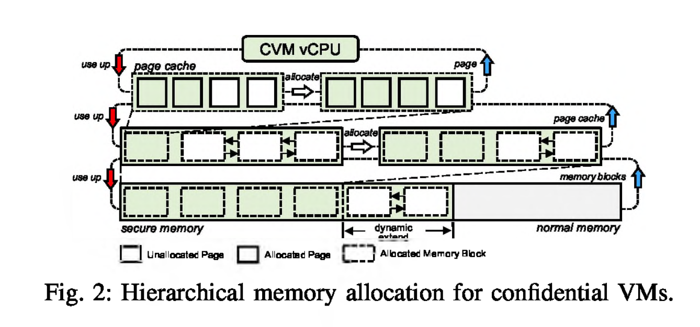
首先将一整个连续的安全内存池划分为多个 page cache 块，单个 page cache 包含多个页面，默认为 256KB，再这些块前后相连组织成双向循环链表的形式。分配策略总共分为三层：最顶层中 SM 直接尝试从发生缺页异常的 vCPU 对应的 page cache 中的页面进行分配；若耗尽则从链表中找出一个空闲块分配给当前 vCPU；若链表中的块也濒临耗尽，SM 则会向 Hypervisor 发起请求对安全内存池进行扩展的。整体而言策略还是比较清晰明了的。
由于 SM 用于处理 CVM 的二阶缺页异常，因此 CVM 被分配的内存都是安全内存，通过 SM 设置 PMP 相关寄存器对安全内存的访问权限进行控制，保障了 CVM 的内存机密性和完整性。同样的，由于没有内存加密，无法抵御冷启动等物理攻击。
寄存器状态保护
ZION 采用一种“双 vCPU 状态”的设计实现寄存器保护。具体来说，CVM 的一个 vCPU 包含两个 vCPU 数据结构，一个存储在 SM 的内存中，称作 secure vCPU；另一个存储在 Hypervisor 的内存中，称作 shared vCPU。CVM 的虚拟机退出和进入的上下文切换过程中，vCPU 的状态保存在 secure vCPU 中。但是当遇到如 MMIO 等需要 Hypervisor 协助的场景时，Hypervisor 通过 MMIO 读取到的数据会写入 shared vCPU 中，在切换回到 CVM 执行时，SM 首先从 secure vCPU 中恢复 CVM 的寄存器状态，然后选择性地从 shared vCPU 中读取需要的寄存器状态（如 MMIO 读取的返回值），更新到 CPU 中。在这个过程中，还可以引入一个简单的机制对读取数据的合法性进行检查。
由于 CVM 上下文切换保留恢复的寄存器状态存储在 SM 所属的内存中，Hypervisor 无法进行读写，因此实现了寄存器状态的保护。
参考文献
- Jie Wang, Juan Wang, Yinqian Zhang, “ZION: A Practical Confidential Virtual Machine Architecture on Commodity RISC-V Processors,” in Proceedings o f the 62th ACM/IEEE Design Automation Conference, 2025.
 微信
微信 支付宝
支付宝